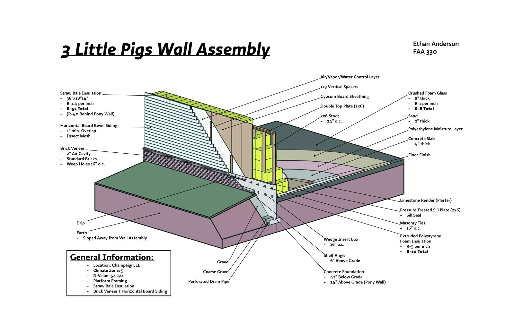
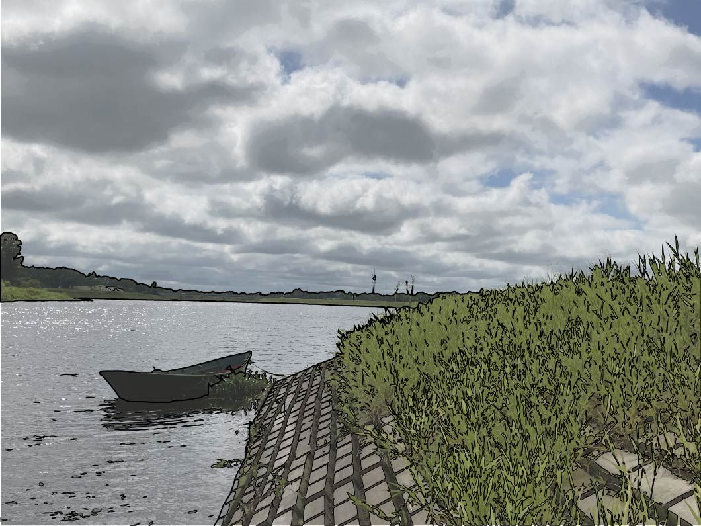
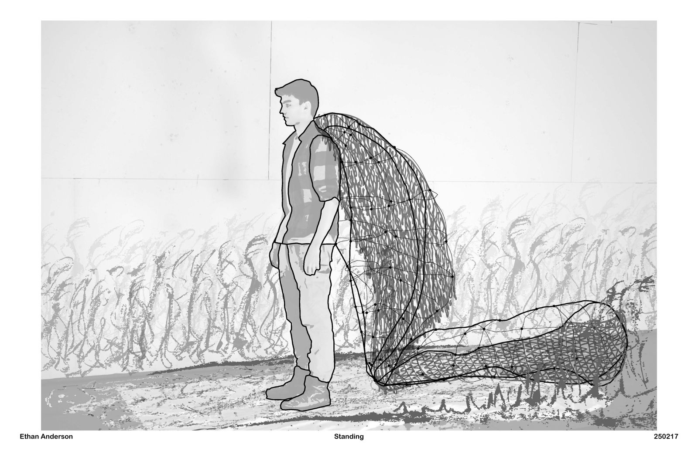
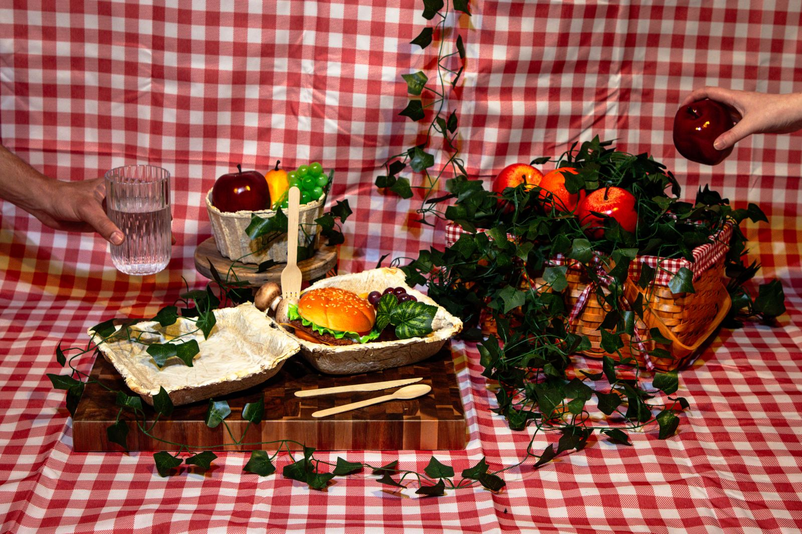
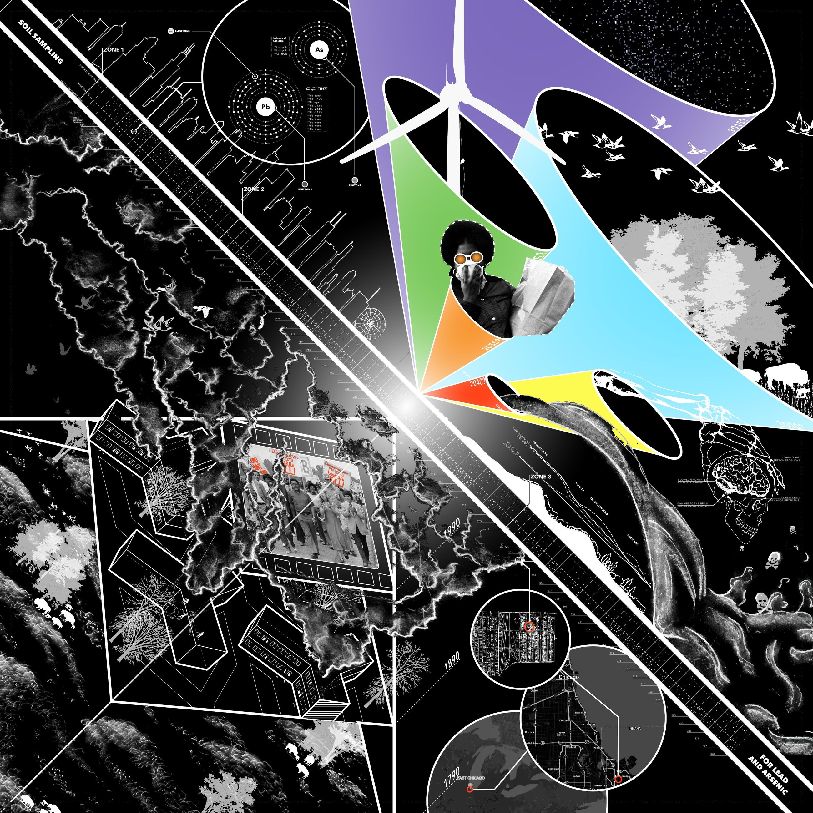
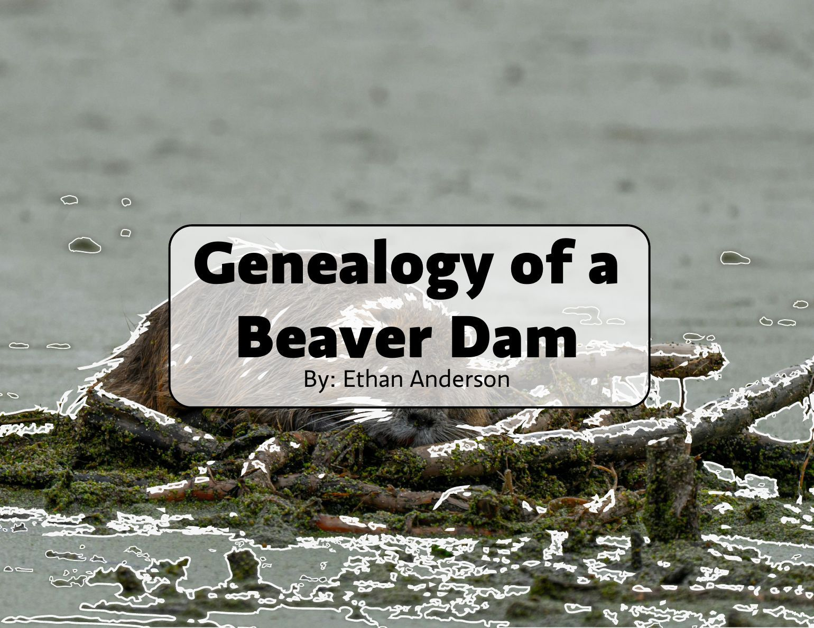

3 Little Pigs Wall Assembly
FAA 330 · 2025
A straw-bale wall assembly that ordinary builders can put up: conventional stick framing, R-52 insulation.

FAA 330 · 2025
A straw-bale wall assembly that ordinary builders can put up: conventional stick framing, R-52 insulation.

2024
Four months of river fieldwork in Pilar, Paraguay, testing whether building the Costanera changed the fish and invertebrates living there.

ARCH 172 · 2025
Gizmo architecture that works alongside beavers to rewild the Kankakee Marsh: something you wear, a boat, and a field of shipping-container-sized interventions.

ArtD 326 · 2025
Takeout containers grown from mycelium rather than manufactured, designed to replace single-use Styrofoam and decompose without a trace.

ARCH 273 · 2025
A semester on East Chicago's USS Lead Superfund site: a time-bending atlas, gable prototypes that dunes could grow on, a village modeled on Dutch dikes, and a hundred-year story told by birds and wind.

ArtD 326 · 2025
A construction manual for a building made by beavers: its materials, site, foundation and walls, drawn the way you'd document human architecture.